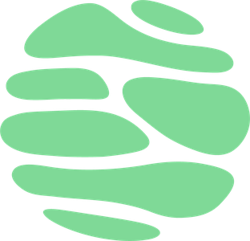

01
Conteúdo
Os assuntos da prova, destrinchados um a um.

O mesmo conteúdo que organiza as aulas, aberto aqui por categoria — do assunto que cai na prova à curiosidade que faz querer estudar.
Os assuntos da prova, destrinchados um a um.
Do DNA ao cruzamento que cai na prova.
As perguntas que mais chegam no direct, respondidas.
Biologia fora do edital — a parte que faz querer estudar.
Quem passou, e o que mudou no caminho até lá.
O que os alunos contam depois da prova.
Enquanto o blog não abre, o conteúdo continua saindo nas aulas e nas revisões — e o Calendário 2026 já está fechado, mês a mês.
Ver o Calendário 2026